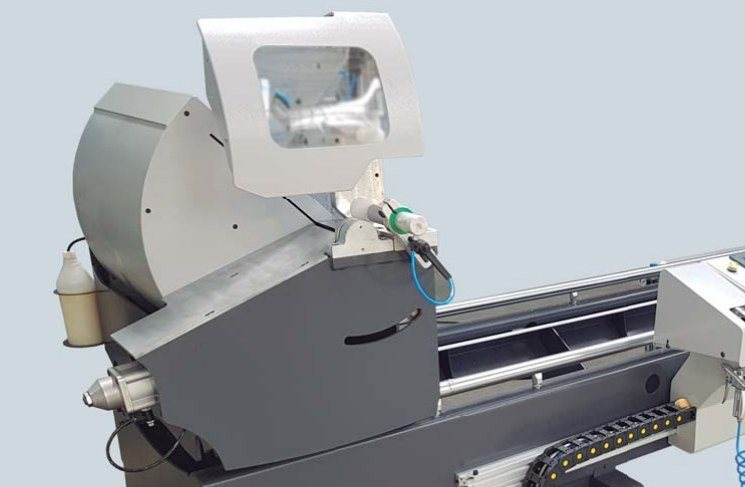
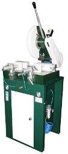

Cortadora manual
SOK 350-45 Manual
Cortadora de aluminio y PVC con disco de 350 mm. Corta a 90º y 45º girando el plato y a 45º reclinando el cabezal.
4 versionesPrecio a consultar

Cortadora doble cabezal
Cortadora de doble cabezal con inclinación automática a 90º, 45º y ángulos intermedios, compatible con los programas de optimización de cortes.
Datos tomados de los manuales y folletos del fabricante. Pueden cambiar sin aviso: confirmalos al pedir la cotización.
Cortadora de aluminio y PVC con disco de 350 mm. Corta a 90º y 45º girando el plato y a 45º reclinando el cabezal.

La SOK 350-45 con doble morza neumática y base de apoyo, para cortar series sin ajustar cada perfil a mano.

Cortadora de un cabezal ascendente con salida automática del disco por pistón hidroneumático.

Cortadora frontal automática con disco de 550 mm y reclinación automática de +45º a -45º. Corte con mando a dos manos.